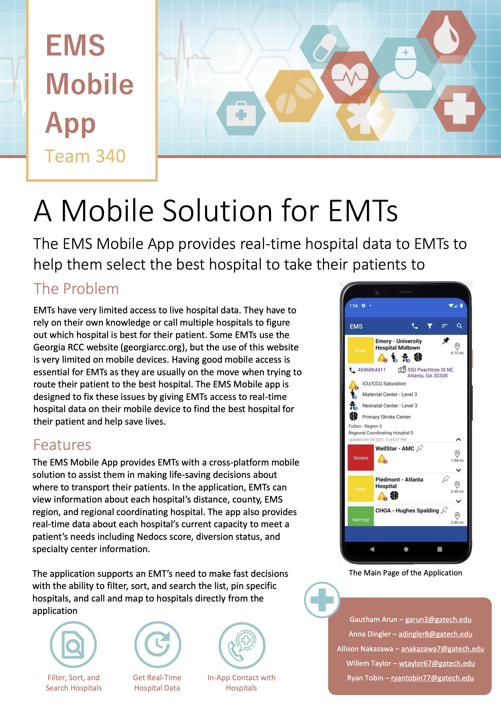

EMS Mobile App
This project was completed by a team of 5 student developers as part of Georgia Tech's year-long junior design course. The client of this project was a worker in Emergency Medical Services (EMS) who wished for a better system to help Emergency Medical Technicians (EMT) determine which hospital a patient should be brought to based on the hospital's capabilities and current availability.
My personal responsibilities on this project centered mostly around development of the application's backend database for storing hospital availability data as well as creating the webscraper to continuously retrieve real-time data about hospital availability.
View the flyer summarizing the project below:
Read more about this project here:
Click here to view the full Github repository